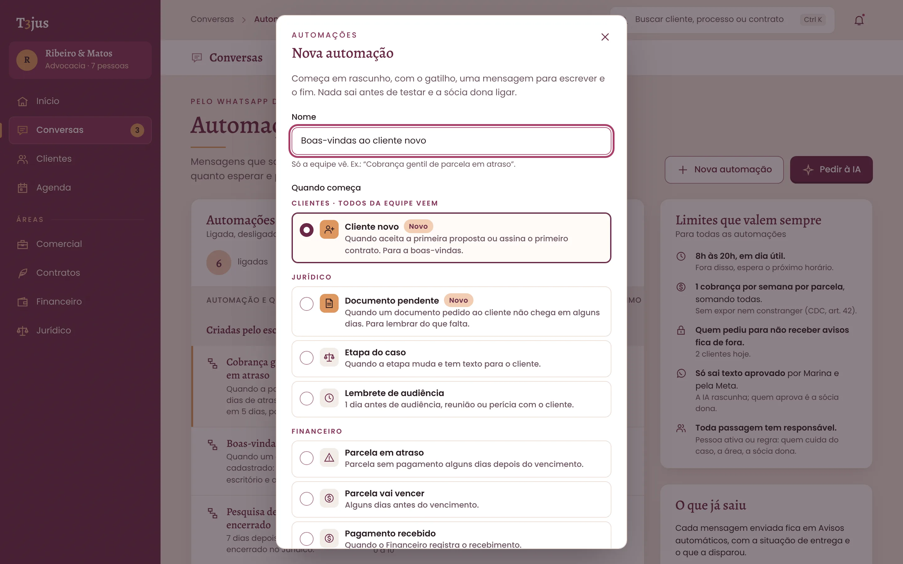
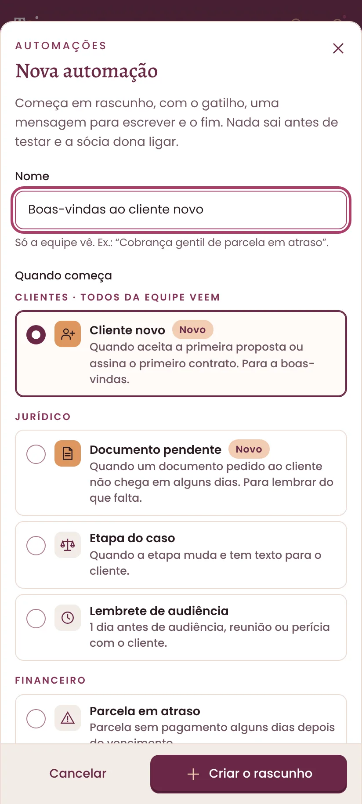

Nova automação: escolher o gatilho
Nome e “Quando começa”, agrupado por área: Clientes (Cliente novo, que todos veem), Jurídico (Documento pendente, Etapa do caso, Lembrete de audiência) e Financeiro (os quatro de antes). Só aparecem os das áreas que a pessoa tem. No pé, o atalho para pedir à IA, que também usa os dois novos.
Abrir: gatilhos.html?estado=escolher (estreite a janela para ver o celular)